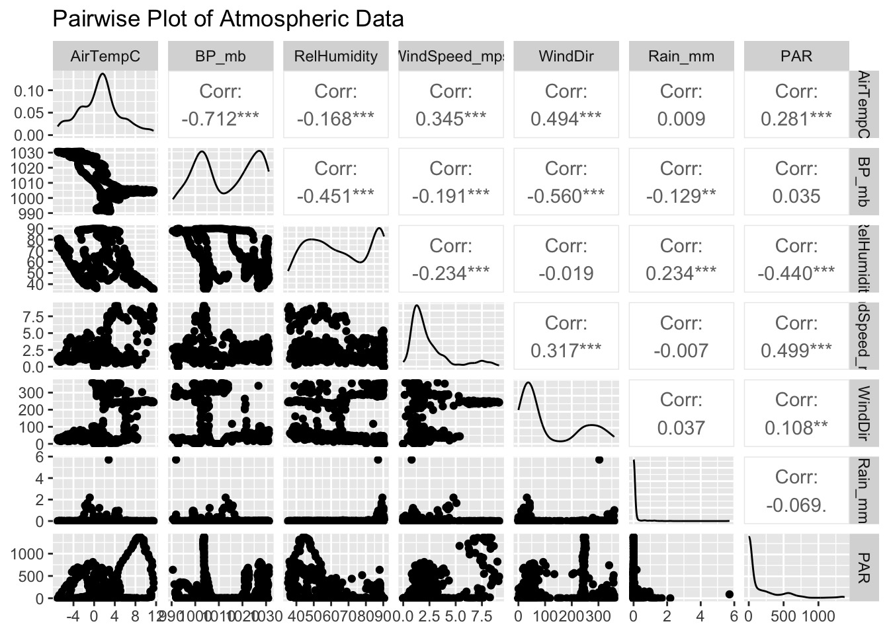
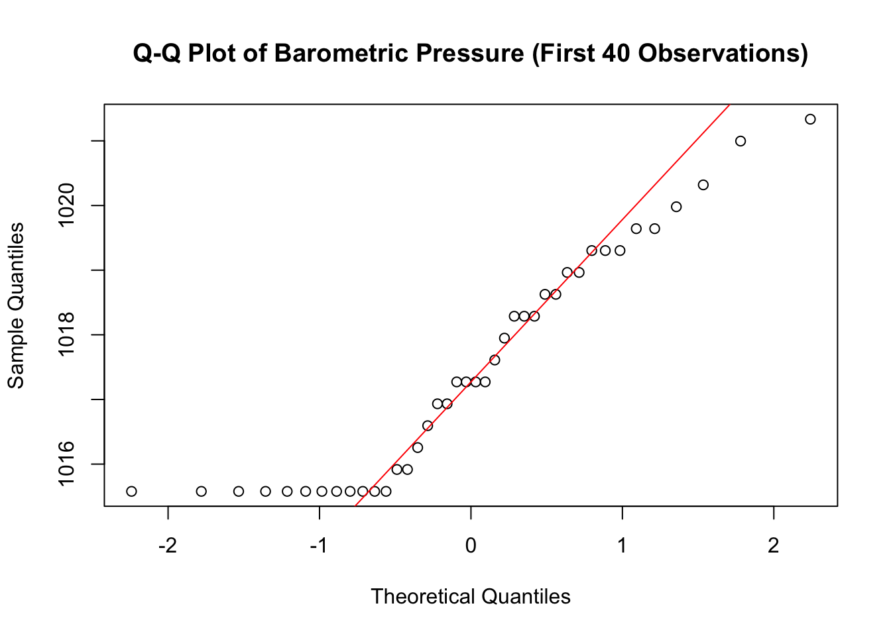
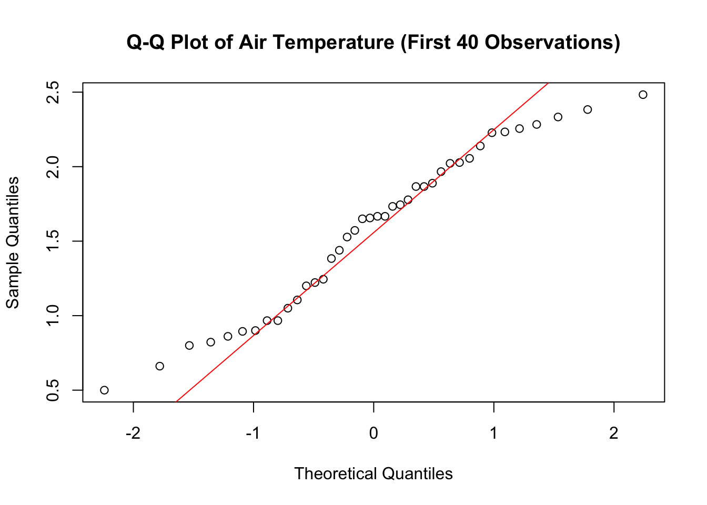
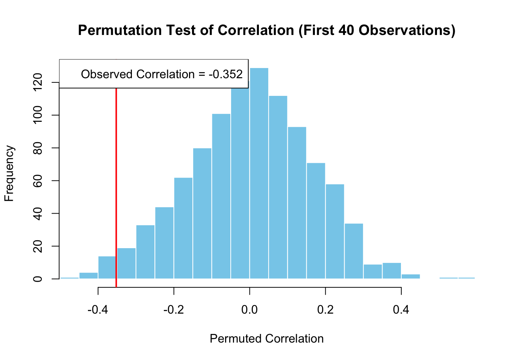

library(tidyverse)
library(GGally)
library(knitr)
library(kableExtra)
source("/Users/ethanpisterman/Desktop/ENVS 543/ENVS543/get_rice_data.R")
url.data <- get_rice_data()Correlation Assignment
Introduction
This analysis investigates the relationship between various atmospheric variables collected at the Rice Rivers Center, using statistical methods to test for normality and correlation.
Data Import & Setup
Here, we load the necessary packages and import the Rice Rivers Center data using a custom function.
Data Visualization with ggpairs()
We filter the data for the period from 10 February to 15 February and select the relevant atmospheric variables. We then use ggpairs() to visualize the pairwise relationships.
url.data$Date <- as.Date(url.data$Date,
format = "%Y-%m-%d")
feb <- url.data %>%
filter(format(Date, "%m-%d") >= "02-10" & format(Date, "%m-%d") <= "02-15")
atmosphere <- feb %>%
select(AirTempC, BP_mb, RelHumidity, WindSpeed_mps, WindDir, Rain_mm, PAR)
ggpairs(atmosphere,
title = "Pairwise Plot of Atmospheric Data")
Identifying Strongest Correlation
Here, we calculate pairwise Pearson correlations and identify the strongest correlated pair of variables.
# Calculate the pairwise Pearson correlations
correlations <- cor(atmosphere,
use = "complete.obs",
method = "pearson")
# Identify the strongest correlation (excluding self-correlations)
strongest_pair <- which(abs(correlations) == max(abs(correlations[correlations != 1])),
arr.ind = TRUE)
var1 <- colnames(atmosphere)[strongest_pair[1]]
var2 <- colnames(atmosphere)[strongest_pair[2]]
# Perform correlation test for the strongest pair
cor_test <- cor.test(atmosphere[[var1]],
atmosphere[[var2]],
method = "pearson")Strongest Correlation Pair: BP_mb and AirTempC Correlation Coefficient: -0.7115555 95% Confidence Interval: -0.7496722 -0.6687337 Normality Testing
In this step, we subset the data to use only the first 40 observations of air temperature (AirTempC) and barometric pressure (BP_mb). We then perform the Shapiro-Wilk test to determine if these variables are normally distributed.
# Subset the first 40 observations
subset_data <- atmosphere %>% slice(1:40)
# Shapiro-Wilk test for normality on the first 40 observations
shapiro_temp_subset <- shapiro.test(subset_data$AirTempC)
shapiro_pressure_subset <- shapiro.test(subset_data$BP_mb)Shapiro-Wilk Test p-value for AirTempC: 0.1411499 Shapiro-Wilk Test p-value for BP_mb: 0.001471311 Correlation Analysis
Based on the results of the normality tests, we choose the appropriate correlation method (Pearson or Spearman) and perform the correlation test.
# Determine the correlation method based on normality tests
correlation_method_subset <- if (shapiro_temp_subset$p.value > 0.05 && shapiro_pressure_subset$p.value > 0.05) {
"pearson"
} else {
"spearman"
}
# Perform the correlation test using the chosen method
correlation_result_subset <- cor.test(subset_data$AirTempC,
subset_data$BP_mb,
method = correlation_method_subset)Correlation Method Used (first 40 observations): spearman Correlation Coefficient: -0.2899679 p-value: 0.06952684 Normality Check with Q-Q Plots
We use Q-Q plots to visually assess the normality of AirTempC and BP_mb.
# Q-Q plot for barometric pressure (first 40 observations)
qqnorm(subset_data$BP_mb,
main = "Q-Q Plot of Barometric Pressure (First 40 Observations)")
qqline(subset_data$BP_mb,
col = "red")
# Q-Q plot for air temperature (first 40 observations)
qqnorm(subset_data$AirTempC,
main = "Q-Q Plot of Air Temperature (First 40 Observations)")
qqline(subset_data$AirTempC,
col = "red")
Interpetation
The Q-Q plot for barometric pressure (BP_mb) shows significant deviations from the normal line, particularly in the tails. This suggests a departure from normality, with a possible left skew in the data. The flattening at the lower quantiles indicates potential outliers or a skewed distribution. These observations align with the Shapiro-Wilk test result, which returned a p-value of 0.001471, indicating that the data is not normally distributed.
The Q-Q plot for air temperature (AirTempC) follows the normal line fairly closely, with only slight deviations at the upper tail. This suggests that the data is approximately normally distributed, with a minor right skew. The small upward curve at the upper quantiles indicates a slight positive skew, but overall, the fit is good. This is consistent with the Shapiro-Wilk test result, which returned a p-value of 0.141150, suggesting that the data does not significantly deviate from normality.
Permutation Test
We conduct a permutation test to evaluate the null hypothesis that there is no true correlation between AirTempC and BP_mb
# Define a permutation test function for the first 40 observations
perm_test_subset <- function(x, y, n = 1000) {
observed_corr <- cor(x, y, method = "pearson")
permuted_corrs <- replicate(n, cor(sample(x), y, method = "pearson"))
p_value <- mean(abs(permuted_corrs) >= abs(observed_corr))
# Plot histogram of permuted correlations
hist(permuted_corrs,
breaks = 30,
main = "Permutation Test of Correlation (First 40 Observations)",
xlab = "Permuted Correlation", col = "skyblue", border = "white",
xlim = c(min(permuted_corrs), max(c(permuted_corrs, observed_corr))))
# Add a red line for the observed correlation
abline(v = observed_corr,
col = "red", lwd = 2)
legend("topleft",
legend = paste("Observed Correlation =",
round(observed_corr, 3)))
return(list(observed_correlation = observed_corr,
p_value = p_value))
}
# Run the permutation test on the first 40 observations
perm_test_result_subset <- perm_test_subset(subset_data$AirTempC, subset_data$BP_mb)
Observed Correlation (First 40 Observations): -0.3520195 Permutation Test p-value (First 40 Observations): 0.034 Summary of Findings
The strongest pairwise correlation observed was between BP_mb and AirTempC, with a Pearson correlation coefficient of -0.71 and a 95% confidence interval of -0.75 to -0.67.
Normality testing indicated that AirTempC is likely normally distributed (p-value = 0.141), while BP_mb is not (p-value = 0.00147).
Spearman correlation for the first 40 observations yielded a coefficient of - 0.29, which was not statistically significant (p-value = 0.070).
The permutation test confirmed the significance of the observed correlation, with an observed value of -0.35 and a p-value of 0.032.
Overall, the analysis demonstrates a strong negative relationship between air temperature and barometric pressure, supported by robust statistical testing. The combination of parametric and non-parametric methods provided a comprehensive view of the data, highlighting significant correlations and deviations from normality.